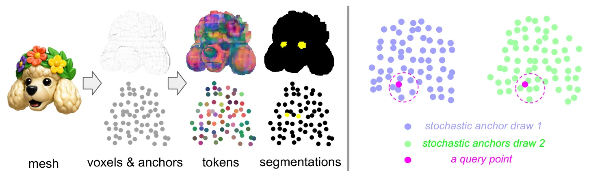
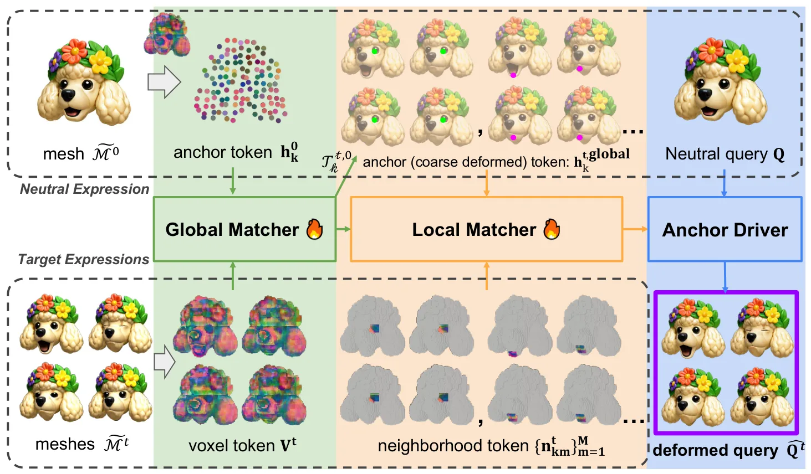

RegHead：通过前馈配准构建非人形头部 BlendshapeRegHead: Non-Humanoid Head Blendshapes via Feed-Forward Registration
提供网格对应与前馈非刚性配准思路，对三维资产处理有参考，但核心场景是角色动画而非测量级重建。
一句话工作总结
以稠密随机锚点表示局部形变，用前馈网络把未配准表情网格快速转换为语义一致的 blendshape basis。
摘要
RegHead 面向非人形角色头部，自动把无对应关系的表情网格转换为具有统一语义的 blendshape basis。方法先由少量艺术家绑定资产和微调图像编辑扩展共享表情词汇数据集，再用适合局部面部形变的稠密随机 anchor motion 表示，最后由前馈配准网络从中性形状预测 anchor deformation。实验称其相较优化式基线获得更高保真度并快多个数量级，还支持将人脸跟踪信号实时重定向到非人形角色。
We present RegHead, a framework for constructing semantic blendshape sets for animatable non-humanoid head avatars. With a fixed expression vocabulary, semantic blendshapes provide a low-dimensional and interpretable animation interface and support cross-identity retargeting. Building such blendshape sets remains expensive because (i) expression-consistent supervision is scarce, (ii) generated 4D assets typically lack correspondence, and (iii) facial motion is highly localized. We propose (1) a large-scale dataset of non-humanoid identities paired with a shared expression vocabulary, obtained by expanding a small artist-rigged library via fine-tuned image editing; (2) a dense stochastic anchor motion representation tailored to localized facial deformations; and (3) a fast feed-forward registration model that converts unregistered expression meshes into a corresponded blendshape basis by predicting anchor-based deformations from the neutral shape. Experiments show that our approach produces higher-fidelity expression meshes than baselines, while running orders of magnitude faster than optimization. We further demonstrate real-time retargeting from human face tracking signals to non-humanoid characters, capturing both head pose and localized facial motions. Our project page is available at https://snap-research.github.io/RegHead/.
中文解读摘录
图表/页面预览

{kind=link}

{kind=link}
